Use Routes
Include
existing WP in a Route
Split a
Route
Append,
Insert Waypoint and Split Route around Leg
Move
WP
Combine
Routes
Delete
Route
Split
a Route with the Context Menu
activate_route
Send
an Activated Route to an Autopilot
Route
Handling Techniques
* //
Example Situation
How to fix a routing problem to avoid a shallow bank extending from the light. How to use split and extend - an example.
Include existing WP in a route
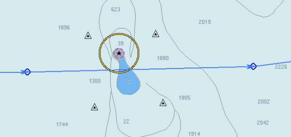
Hm…a bit of a miss in the planning. An islet with a shallow bank extending southward on our route. We put two marks north of the obstruction and would like to include these in our route.
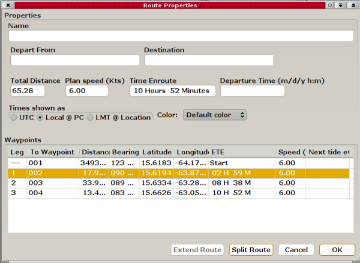
Split Route
The waypoint west of the islet is #2. We mark this in "Route Properties", from the right-click menu. The Button "Split Route" is highlighted, meaning it is available to use. This is exactly what we want to do, so we click the button and split the route at waypoint #2.
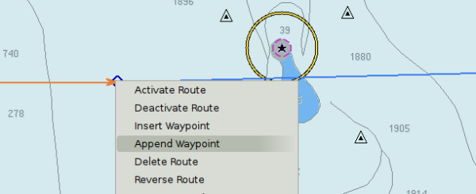
Append, Insert Waypoint and Split Route around Leg
Right click at #2 and choose "Append Waypoint",
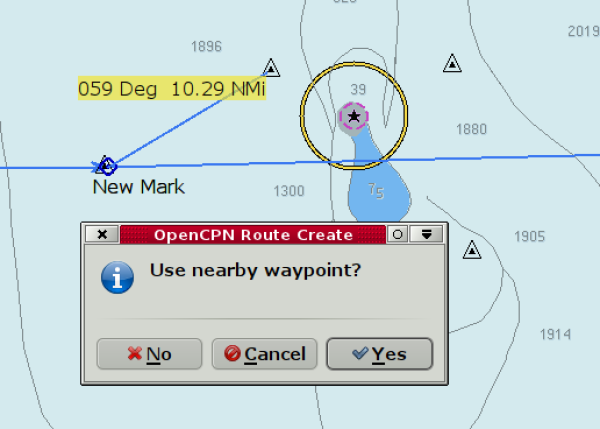
Move the cursor to the first triangle, and answer yes to "Use nearby
waypoint?".
Then move the cursor to the second triangle , and answer yes to "Use
nearby waypoint?".
Same thing for the original waypoint to the east of the islet.
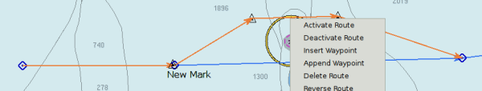
Activate Route
Click "Activate Route" to see that this extension worked. For more detail see Activating Routes
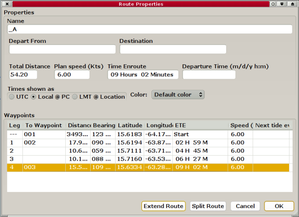
Once again mark "Route Properties" in the right-click dialog. #3 is the last waypoint in our "new" temporary route. The "Extend Route" button is highlighted, so we click it.
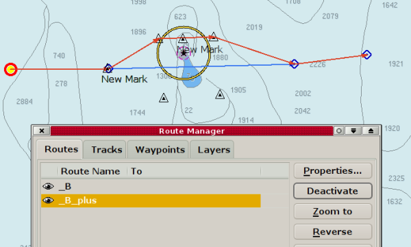
Delete Route
Open the Route Manager to view the result. Notice the naming of the routes. _B_plus is active. What remains is to delete route _B and to rename _B_plus to a suitable name, for example the name of your original route.
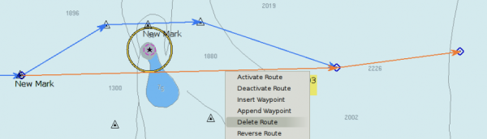
Deleting route _B.
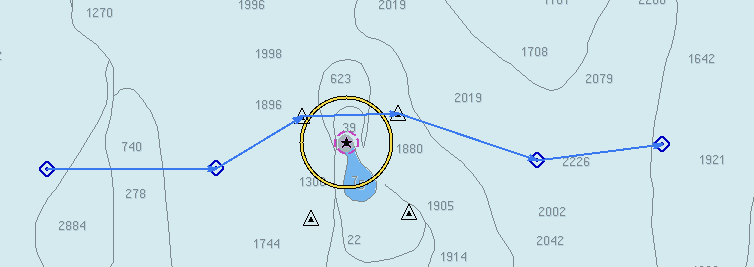
And here is the finally adjusted route.
This was just an exercise…..in real life, it would be easier to just move the existing waypoints in the route, to avoid the Islet.
Split a Route Using the Context Menu
The right-click context menu has a new option : Split ….
Split Route at Waypoint
As an example let’s start with a route named "Split Route Demo"
containing Waypoints A, B, C and D.
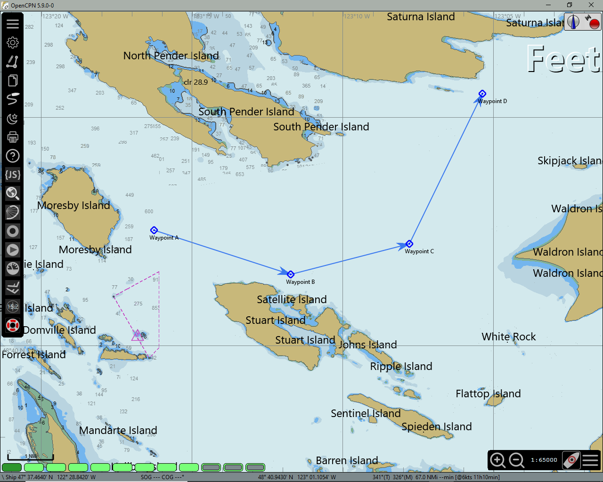
If we right-click on Waypoint B, then select "Split at Waypoint",
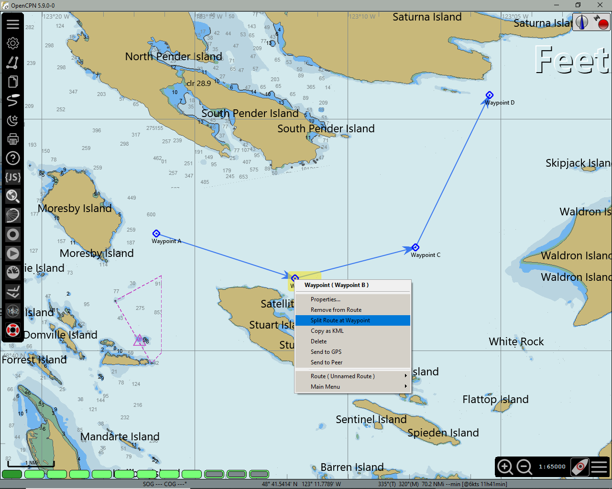
The first route is named "Split Route Demo_A", between Waypoints A and
B,

and the second route is named "Split Route Demo_B" between Waypoints B,
C and D.
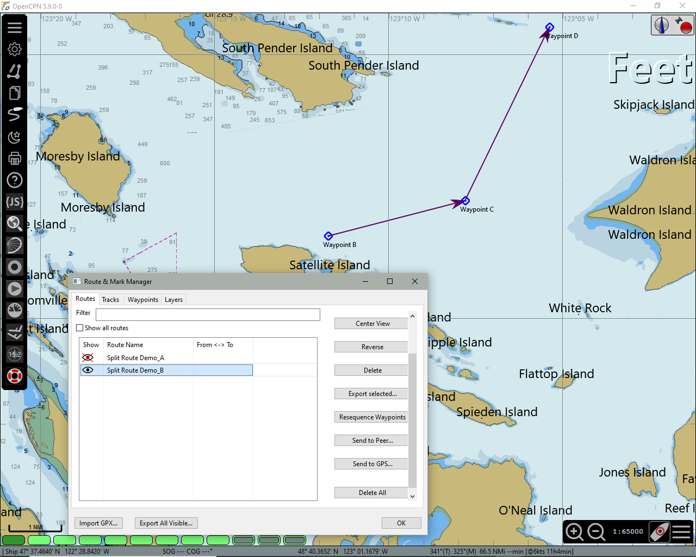
This is exactly what the split function accomplishes in the route properties dialog.
Split Route Around a Leg
If we right-click on the leg between Waypoints B and C, then select
"Split Around Leg"…
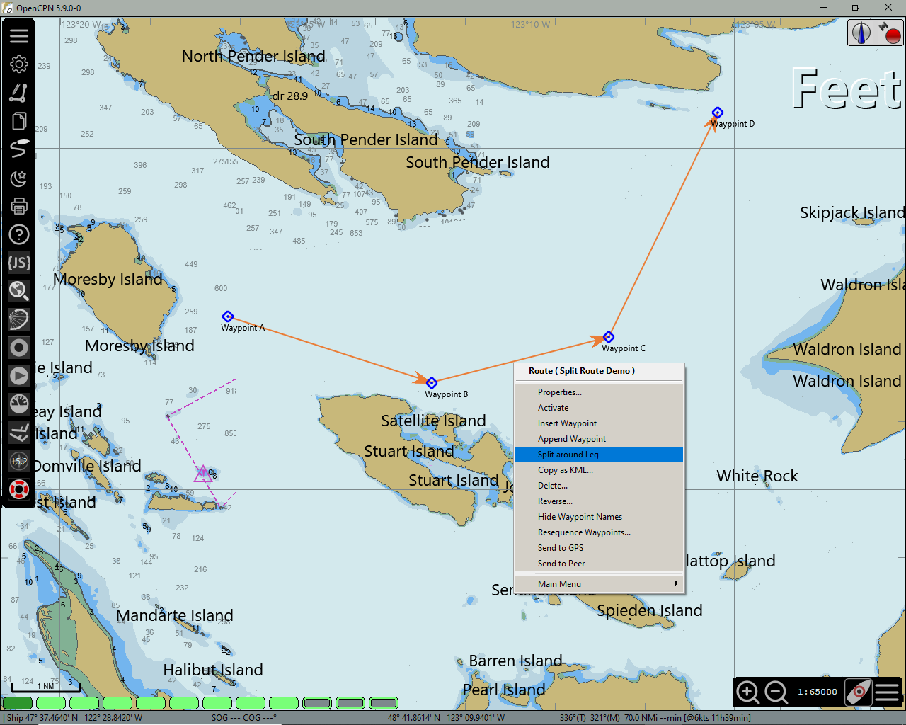
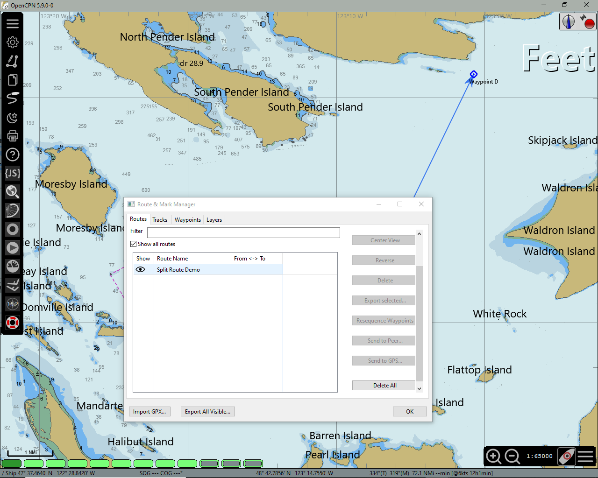
…The routes are split. The first route is named "Split Route Demo_A", between Waypoints A and B, and the second route is named "Split Route Demo_B" between Waypoints C and D.
The leg between Waypoints B and C is removed from the chart and the
Route List.
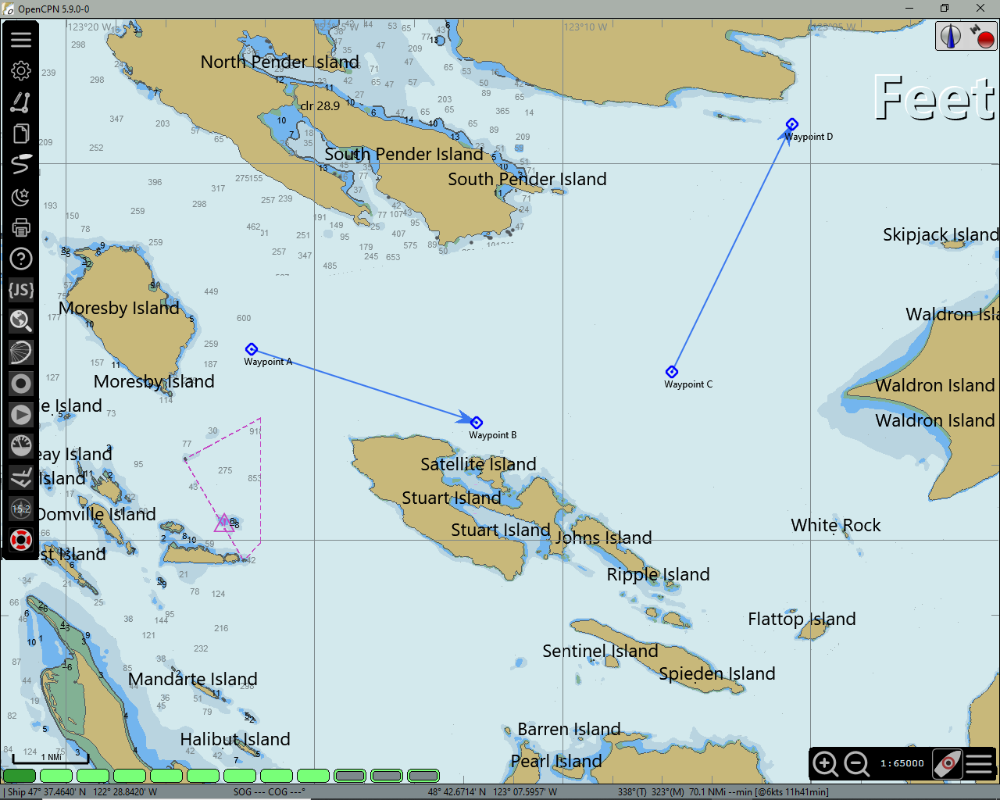
=== Combine Routes ===
Summary: Combine routes by dropping begin or end of route onto another route.
Detailed functionality: Routes can be combined in the following ways.
For this discussion we will combine two routes named Route_A and Route_B.
-
By dragging the end point of Route_A onto a point of Route_B. The question will be asked: "Replace this RoutePoint by the nearby Waypoint?" Answer "Yes" and the question appears: "(Part of) Route to be appended to dragged route?". Answer "Yes" and the part of Route_B from the connection point to the end will be appended to Route_A. Any waypoints of Route_B between its start and the connection point will be deleted. The new route is a combination of Route_A and Route_B. Route_B will be deleted and the new combined route will use the name and From/To fields of Route_A.
-
By dragging the first point of Route_B onto a waypoint of Route_A (the connection point). The question will be asked: "Replace this RoutePoint by the nearby Waypoint?" Answer "Yes" and the question appears: "(Part of) Route to be inserted in the dragged route?". Answer "Yes" and the route part from the start of Route_A until the connection point will be inserted into the beginning of Route_B (the dragged route). Route_A will be deleted since its points have been inserted into the beginning of Route_B. Any waypoints of Route_A between the connection point and the end of Route_A will be deleted. The combined route will use the name and From/To of Route_B.
-
When creating a detour within Route_A. Start a new route and drop the first waypoint a waypoint of Route_A. The question will be asked: "Use nearby waypoint?". Answer "Yes" and the question: "Insert first part of this route in the new route?" will appear. Answer "Yes" again and the part of Route_A from the start to the connection point will be inserted in the beginning of the new route. Continue dropping waypoints to complete the detour, ending by dropping a waypoint onto an existing waypoint of Route_A. The question will be asked: "Use nearby waypoint?". Answer "Yes" and the question: "Append the last part of this route to the new route?". Answer "Yes" and the remaining waypoints of Route_A will be appended to the new route. The New Route tool is still active and you can extend the new route from the last waypoint that was added from Route_A. Route making continues from the last waypoint in Route_A. Route_A will remain unchanged and a new route will exist with the name "(Unnamed Route)". Go to Route & Mark Manager to name the new route and set its From/To descriptions.
-
When making a new route or appending waypoint(s) to an existing route. Drop the new waypoint (not the first one) onto a point of another route, the question appears: "Use nearby waypoint?". Answer "Yes" and the question follows: "Append (part of) this route to the new route?". Answer "Yes" again and part of the other route from the the connection point to the end will be appended to the route being made. Route making continues at the new last point of the route.
Multiple routes can share common waypoints, such as the case of creating a detour route. Changing (dragging) a common waypoint effects all routes the waypoint is part of.
In case the connection point is a part of multiple routes, the first visual route is used for the append or insert. In the case of multiple routes sharing a routepoint you wish to drag to, it is best to hide the other routes you do not want to use: Route & Mark manager, click the "eye" in front of the route.
Example 1:
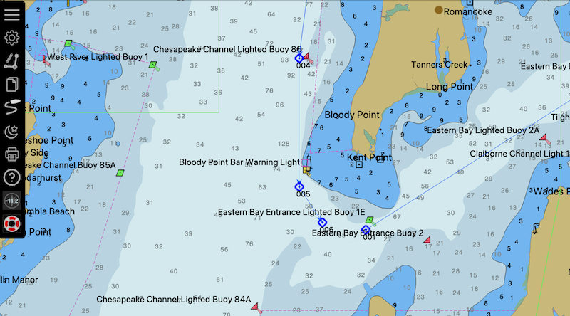
Combine Route_A and Route_B. Both routes must be visible. Drag endpoint of Route_A on start of Route_B.
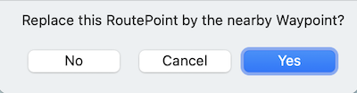
A popup appears; select "Yes" to confirm replacing Route_A’s last waypoint with Route_B’s starting waypoint.
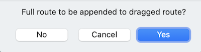
Another popup appears; Select "Yes" to append Route_B’s waypoints to Route_A.
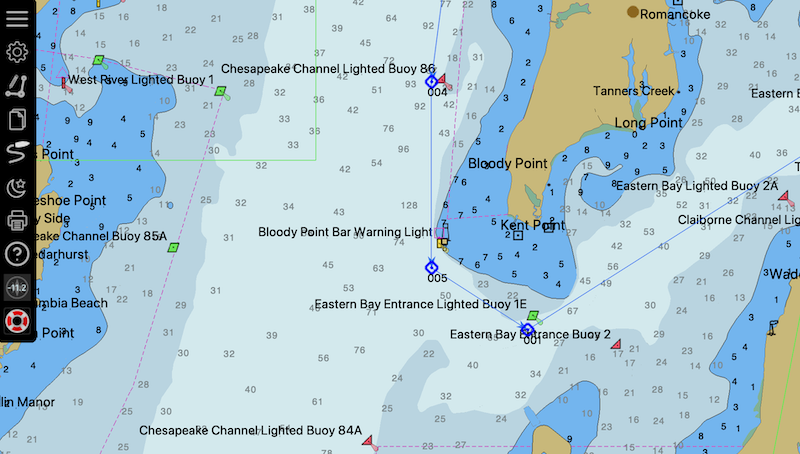
A single route remains, using the name of Route_A. Route_B will no longer exist. OpenCPN can handle waypoints that have the same name.
Or: Drag starting waypoint of Route_B on endpoint of Route_A. Click "Yes" twice. Route_A’s waypoints will be pre-pended (inserted) at the start of Route_B. Route_A will no longer exist.
Note that the name of the remaining route will remain unchanged. You should edit the Name and From/To fields of the remaining route to reflect the change.
Example 2:
You have a long route that you want to keep. Call it Route_A. 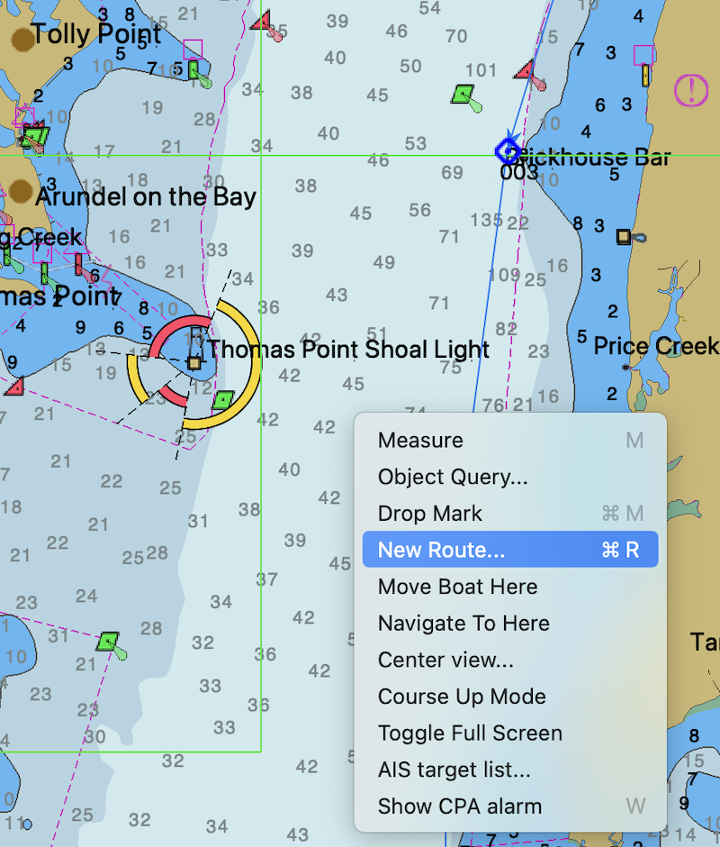
However, in the middle part you want to make a detour. Start making a new route. Click the first waypoint of the new route on the point of Route_A where you want to start the detour.
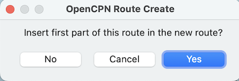
Insert the beginning part of Route_A in the new route (click "Yes").
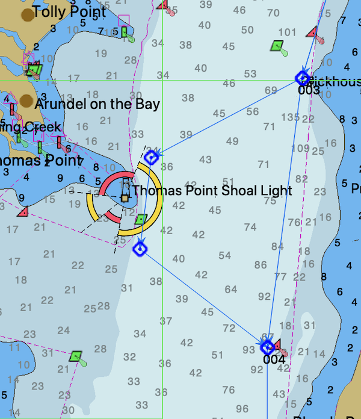
Lay out your detour until you reach the point where you want to join Route_A again. Click on the rejoin waypoint of Route_A.
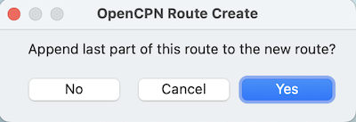
Append the remaining part of Route_A (click "Yes"). End making the route at the end of Route_A.
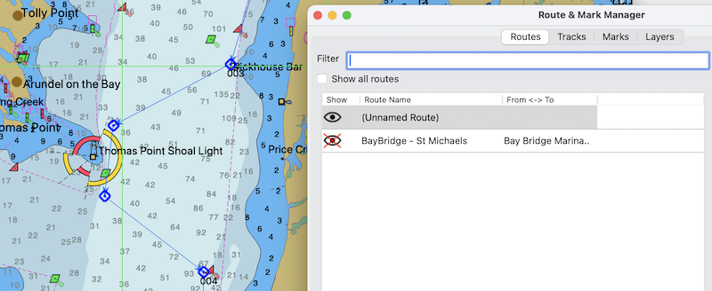
The new route you made is a route on its own and will be named "(Unnamed Route)". Route_A will remain unchanged and the new route will be added to the list of routes. It shares common waypoints with Route_A. If these waypoints are changed, both your new route and Route_A will change.
|
Also depending on which routepoint you select in Route_A, to
combine routes, other messages will appear such as: Yes, to append the last part of the route (You have to know which way the route is drawn) Yes, to append the first part of the route (You have to know which way the route is drawn) If you select yes the other part of Route_A disappears and is removed. |
Example 3:
Sometimes you need to create a circular route that loops back on itself, such as in racing on a course that’s navigated multiple times. Create a route that circles back on itself, then continues around the same set of waypoints in the required order. If not in route creation mode, select "Append waypoint" from the context menu (right-mouse click). At each waypoint after the first set, answer "Yes" to the question "Use nearby waypoint?" The images below show the sequence of creating such a route.
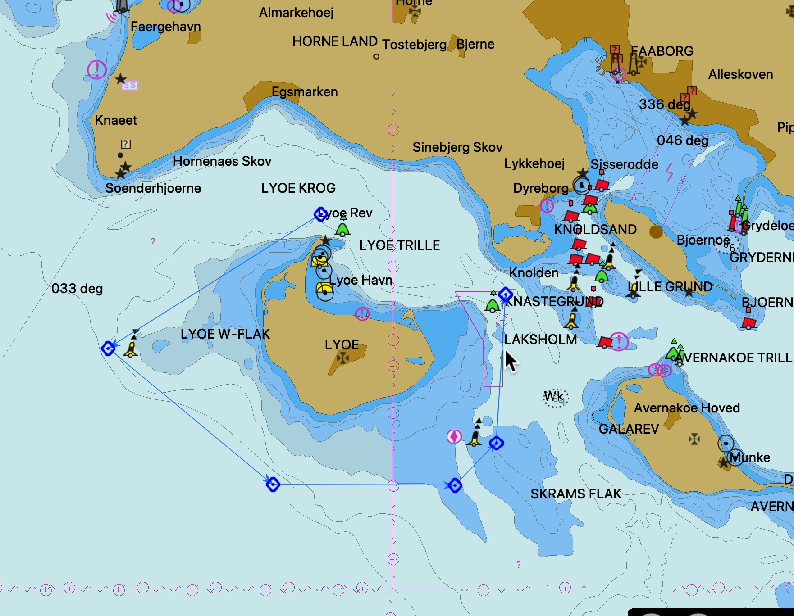
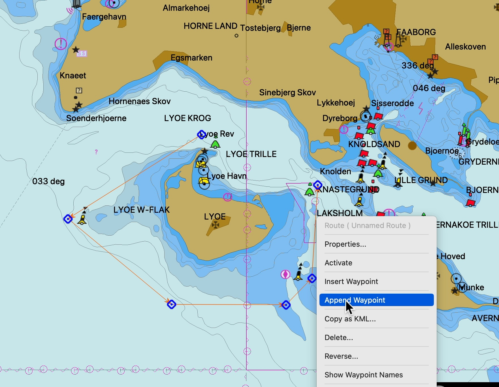
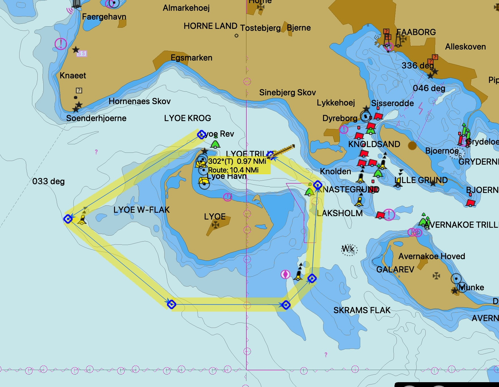
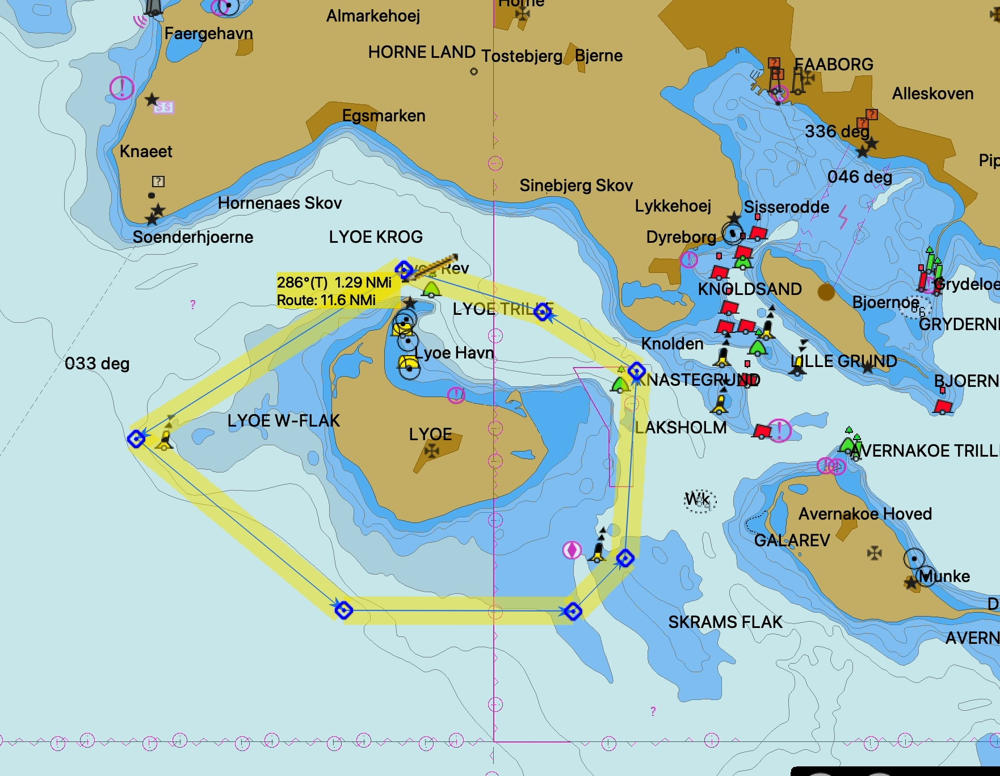
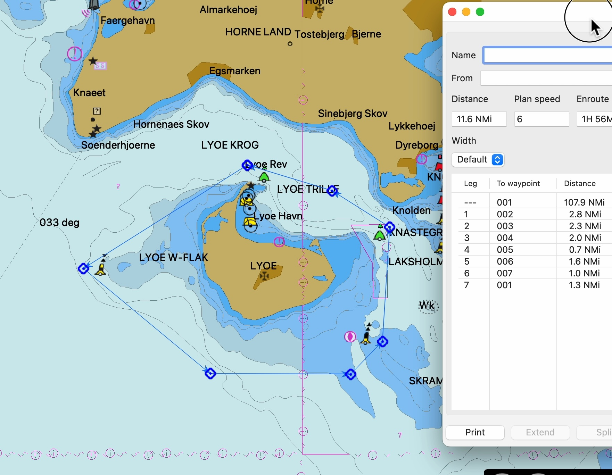
Route Planning - another example
Note: This example used a previous version of OpenCPN but the concept still applies. It can be updated later.
To understand the Route Properties dialog and its planning features, let’s imagine we plan a route from Ibiza in Balearic Islands to Sao Vicente in C. Verde. We will see how this feature includes specific options for every stage of the planning process. In the first instance, let’s say we plan the route at home, and we have not set a departure date yet. We first trace the route. When it is ready, double click in the route to open its Route Properties dialog. This is how it would look like
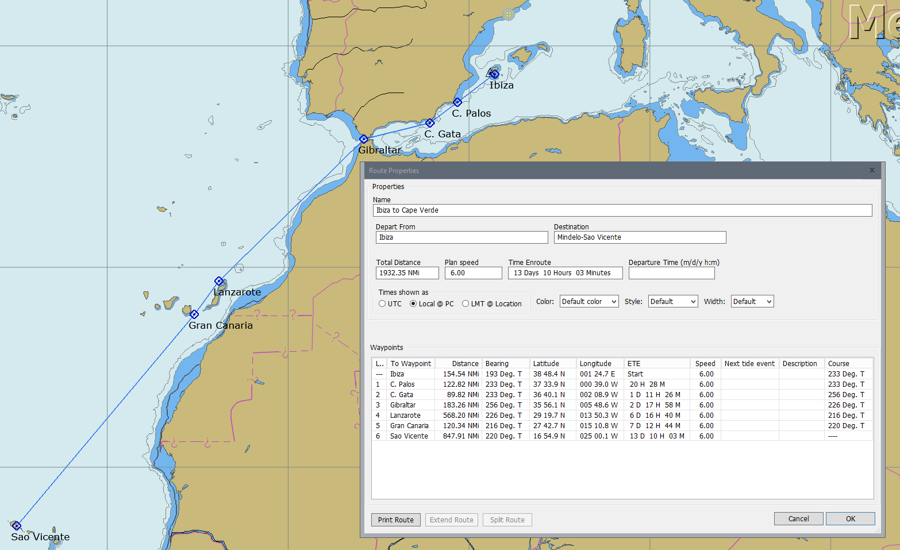
By default there is a plan speed of 6 knots that we can change at any time; The Departure Time box is still blank, so for now the table includes just an ETE (Expected Time En-route) column where we can check the time needed to arrive to every waypoint at that particular planned speed. The distance from the current position to the first waypoint is shown, but not taken into ETE calculations. That’s good for planning a route well in advance, before even setting a departure date. Now let’s imagine we plan to leave in the near future, and already have an intended departure date: we plan to leave Ibiza on May 23rd 2016 at 10:00. So we first check that "Time shown as" option is set at Local@PC; then we enter "5/23/2016 10:00" in the Departure Time box and press "Enter". As we can see, the ETE data is changed to ETA (Estimated Time of Arrival): for the given planned speed and departure date and time, we are presented the date and time of arrival at every waypoint, from the first waypoint of the route (Ibiza). Distance to the first waypoint is again shown, but not taken into ETA calculations:
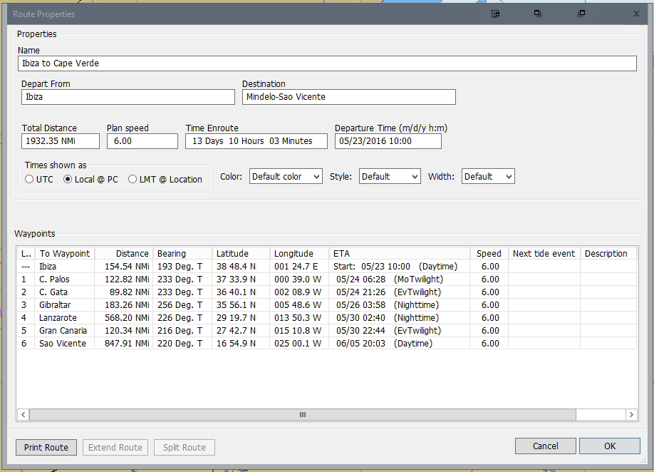
Next, let' say we are already on May 22nd, the day before to the intended departure day from Ibiza. We are already on board of our boat, berthed in Barcelona, and we are ready to leave to Ibiza and start the planned route from there. We connect our GPS so OpenCPN knows the current position, or just use the "Move the boat here" option in the context menu to ensure the boat is located in Barcelona. Then we can enter ">" in the "Departure Time" box. The sign ">" will mean "now" for OpenCPN. When we enter ">" and press enter, the Route Properties dialog show a slightly different data: we see the ETA to every waypoint leaving now, at planned speed, but the calculations now include also the distance from the current position to the first waypoint of the route. That’s the difference between entering the departure time manually, and using ">" sign. A manually typed departure date indicates we will leave at that moment from the first waypoint of the route; instead, ">" means leaving "now" FROM THE CURRENT POSITION, so the distance to the first waypoint is included in ETA calculations. This is the screenshot
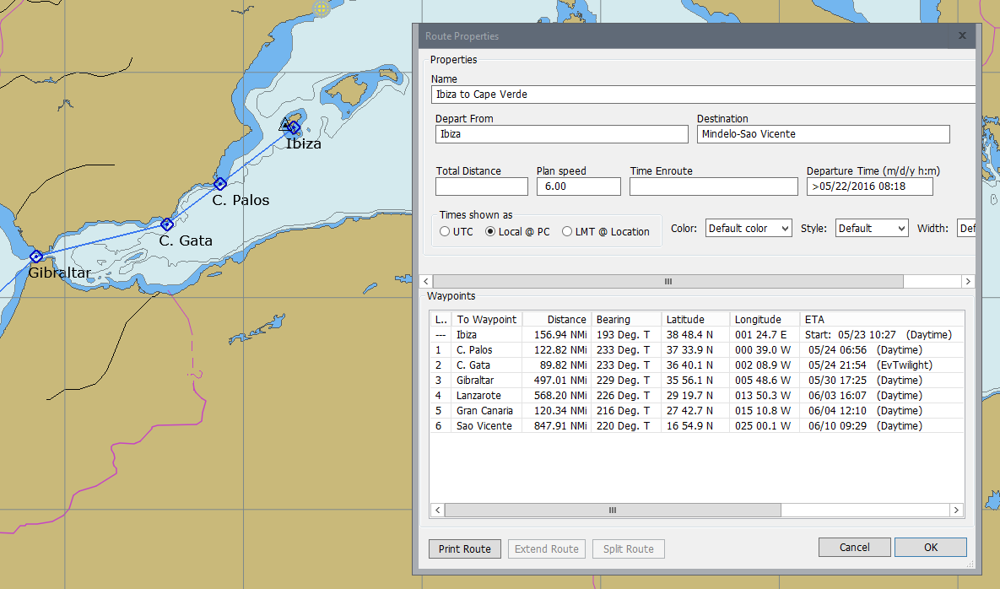
Now the most interesting part, we are now sailing. Our route is now set as Active, we already passed the first waypoints: Ibiza, C.Palos and C. Gata are left behind, and we have an active next waypoint: Gibraltar. During the trip we just need to enter ">" in the Departure Time box and press enter, and we’ll get the ETAs for the remaining waypoints of the route:
Route Handling Techniques
Any navigation object you create is saved by OpenCPN until you delete it. Having a lot of navigation objects makes for a cluttered chart display and slows down the program.
-
Export unused objects to GPX files and delete them from OpenCPN.
-
You can import them later when you need them.
-
Create a separate GPX file for each object so you can import only the ones you need.
Create routes for one-time use
-
Don’t refer to saved waypoints,
-
Don’t upload the route to a GPS,
-
Delete the route when you reach the end point
Route management is pretty simple.
Create routes for future use
If you want to save routes for future use, and want to build on a library of waypoints, and will upload routes to a GPS or chart plotter life will be simpler if you work out a strategy for naming navigational objects and computer files.
Here’s a strategy for your consideration.
-
Build routes in short segments that don’t duplicate other routes.
-
Routes should not share non-end points with other routes.
-
Route points should have meaningful, unique names related to the route name.
-
Routes should be exported to individual GPX files so they can be called up individually.
Example
You have a home port on Little River with a channel that leads to open water. You like to visit Clear Cove and Muddy Harbor, each of which has a channel leading from open water to the final destination.
-
Create a route from LR1 to your dock. Edit the route to name the route points LR1, LR2, LR3, … Dock. If you make the names correspond to the numbered channel markers where you need to make turns it will be easier to recognize the physical aids to navigation the route points represent. Name the route LR1-DOCK. Export the route to a GPX file (LR1-DOCK.gpx).
-
Create a route from CC1 to the Clear Cove anchorage. Rename the route points CC1, CC2, CC3, … CCn (where "n" represents the number of the last point). Name the route CC1-CCn and export it to CC1-CCn.gpx.
-
Create a route from MH1 to the Muddy Harbor dock. Rename the route points MH1, MH2, MH3, … MHn (or MHDOCK). Name the route MH1-MHn and export it to MH1-MHn.gpx.
-
Create three more routes, one from LR1 to CC1, one from LR1 to MH1, and one from CC1 to MH1. In each case, click on the existing route point and select "Yes" in response to "Use nearby waypoint?" Those routes may be straight lines with just a beginning and end point or they may be more complicated to take you around obstructions. Any obstructions should be identified with waypoints given meaningful, unique names. Again, each route should be saved to its own GPX file.
Use of the GPX Routes
When you want to cruise from your home dock to the Clear Cove anchorage, import the LR1-DOCK.gpx file, the LR1-CC1.gpx file, and the CC1-CCn.gpx file. Since the LR1-DOCK route goes in the wrong direction you want to reverse the route. OpenCPN will offer to rename intermediate waypoint for you. Don’t. Remember, your numbers correspond to channel markers whose designations don’t change when you traverse the channel in a different direction.
Advantages
-
Because your waypoint and route point names are unique you don’t have to worry that importing one route will damage another.
-
You can also upload these routes to your GPS without worrying about duplicate waypoint names.
-
Most GPS receivers build routes on waypoints. They don’t have the idea of route points that are not in the waypoint list.
-
You need your route point names to be unique so that uploading one route doesn’t invalidate a route that was previously uploaded.
OpenCPN Import Operation
-
OpenCPN doesn’t care about duplicate route or waypoint names.
-
When you create a route by clicking on points on the chart it names each route point with a number beginning with 001.
-
If you create a second route which joins the first and you "use nearby waypoint" to join the original route you can end up with route points named 001, 002, 003, 004, 002.
-
OpenCPN knows the two 002 points are different because they have different coordinates and different "guids".
-
Your GPS receiver isn’t that sophisticated and it will confuse the two.
Read Route & Mark Manager for more information on exporting routes to GPX files and importing routes from GPX files.